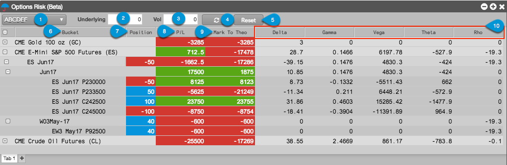
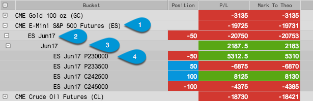
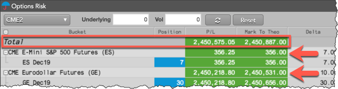

The Options Risk widget consists of the following:

In the above image, the following is shown:
- Account selector — Allows you to check your open position in the selected account.
- Underlying — Text field for entering a price adjustment for the underlying futures contract.
- Vol — Text field for entering a global volatility adjustment for options risk.
- Refresh — Button that updates your position in the options and underlying futures contracts, and recalculates your position and options risk based on any underlying or global volatility adjustments entered in the widget.
- Reset — Button that resets the Underlying and Vol adjustment values to zero.
- Bucket — {% include columns/col-bucket.html %}
- Position — {% include columns/col-position.html %}
- P/L — {% include columns/col-pnl-or.html %}
- Mark to Theo — Displays open P/L calculated with the theoretical options value.
- Options risk columns — Includes columns for the following options Greeks: Delta, Gamma, Vega, Theta, and Rho.
Bucket column in Options Risk
The P/L and position for each options and futures contract in the Bucket column rolls up into their corresponding expiry and product family as follows:

- Product family — Shows aggregate P/L and Greek calculations for all expiries with open positions for this product family.
- Contract expiry — Displays your position in the underlying futures contract, and shows aggregate P/L and Greek calculations at each level for all options contracts and underlying futures contracts with open positions for a specific expiry.
- Options contract expiry — Shows the aggregate P/L and Greek calculations for all options contracts with open positions for a specific expiry.
- Options contract(s) — Displays P/L, position, and Greek calculations for a specific options contract.
Total row in Options Risk
You can show the total P/L for an entire account using the Show Total P/L and Mark to Theo setting in the Settings: Options Risk settings menu. When shown, this row displays the P/L and Mark to Theo totals for all product families with open positions in the account.
